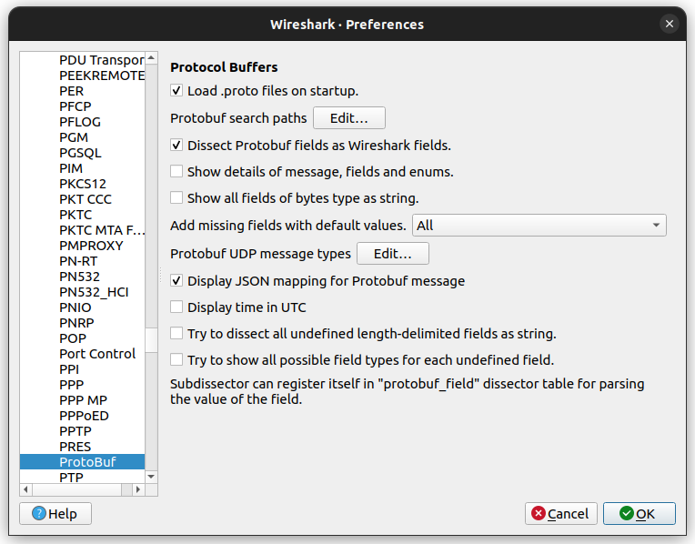
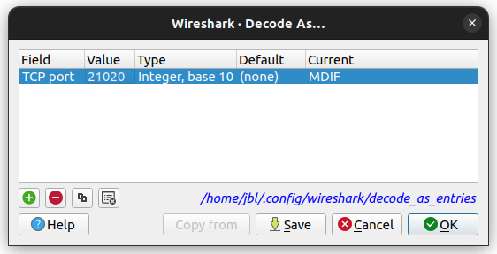
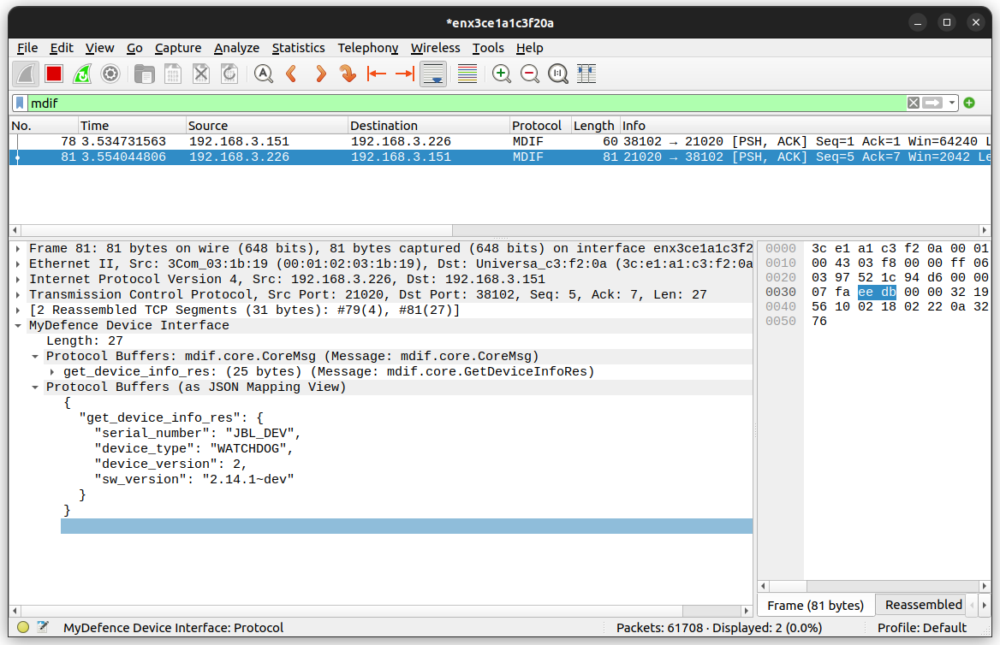

Wireshark
MDIF messages sent over Ethernet (not serial via HDLC) can be captured and
decoded using the Wireshark network protocol analyzer. The MDIF dissector is not
included in the standard Wireshark distribution, but can be setup as a plugin.
The plugin is available in this package in the form of the Lua script
src/wireshark/create_mdif_dissector.lua.
Setup
The Lua script to create the MDIF dissector should be placed in the folder for personal Lua plugins. The location of this folder can be found in the “About Wireshark” dialog under the “Help” menu. Choose “Folders” and look for the location of “Personal Lua Plugins”.

Next configure the Protobuf search paths to include the MDIF message
definitions. The protobuf definitions are available in this package in the
folder src/protobuf. Structure of base files look like this:
src/protobuf
└── mdif
├── common.proto
├── core
│ └── core.proto
├── fwu
│ └── fwu.proto
└── rfs
└── rfs.proto
The Protobuf search paths should be set to include the folder where the :file: mdif folder is located. Setup is done in Edit –> Preferences –> Protocols –> ProtoBuf:
{kind=link}
Tick the options shown above and then edit the search paths to include the folder
containing the mdif folder.

Finally, setup decoding of traffic to/from port 21020 to use the MDIF dissector. Open the “Decode as…” dialog from the “Analyze” menu, and add an entry like this:
{kind=link}
Decoding of MDIF messages should now be possible:
{kind=link}